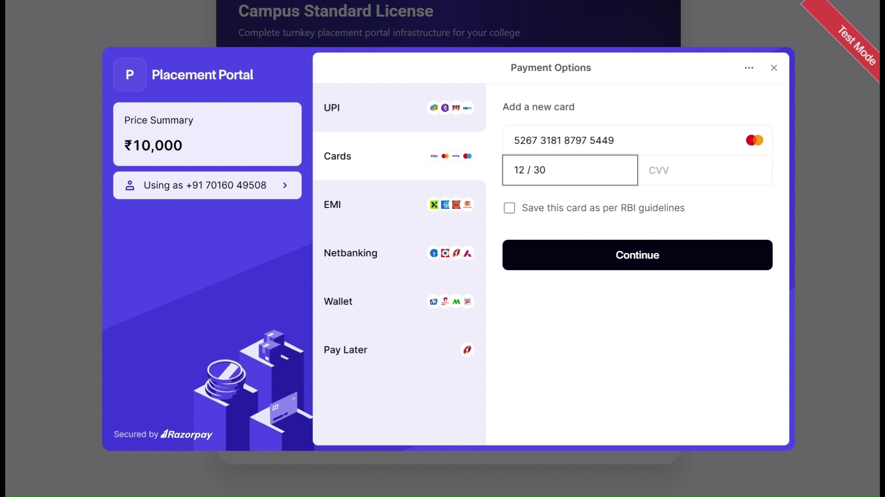
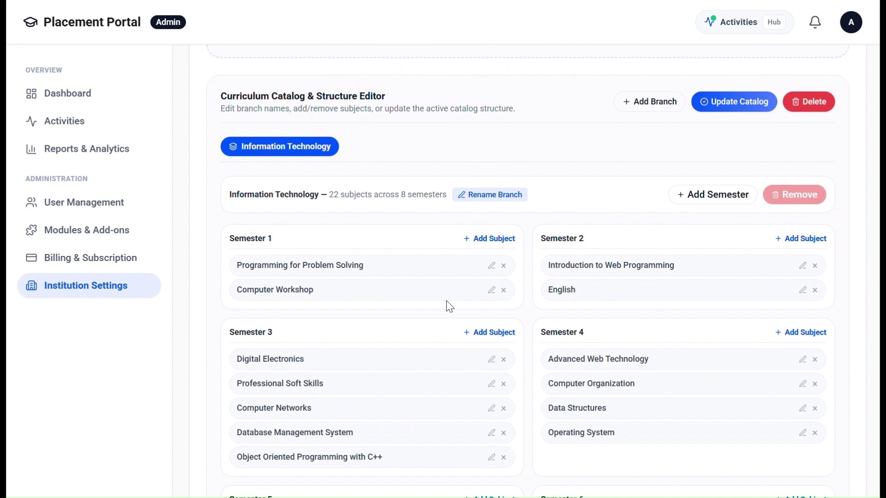
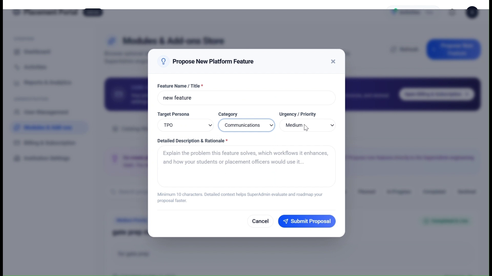
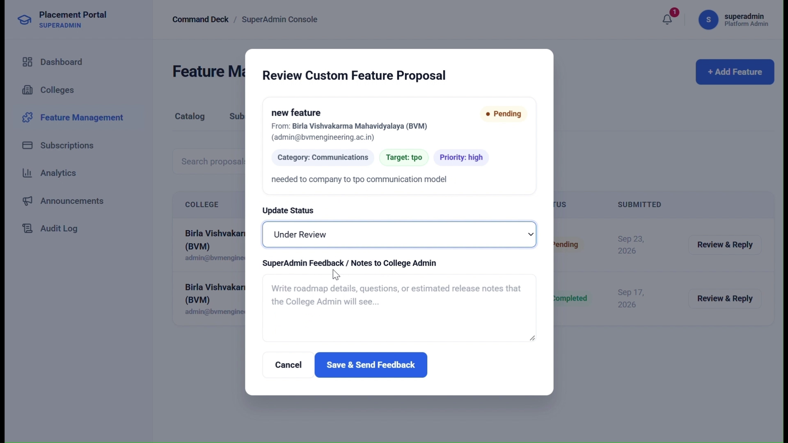
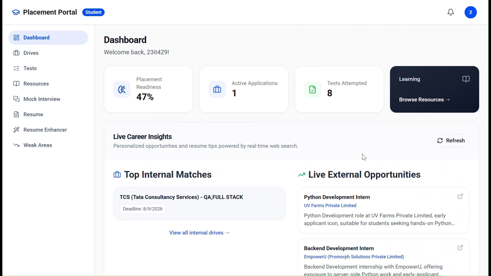
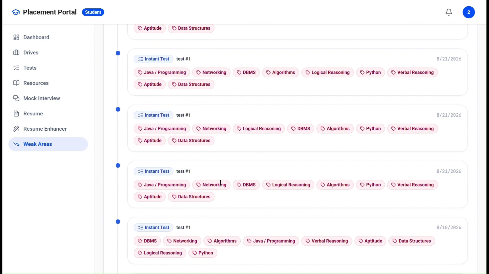
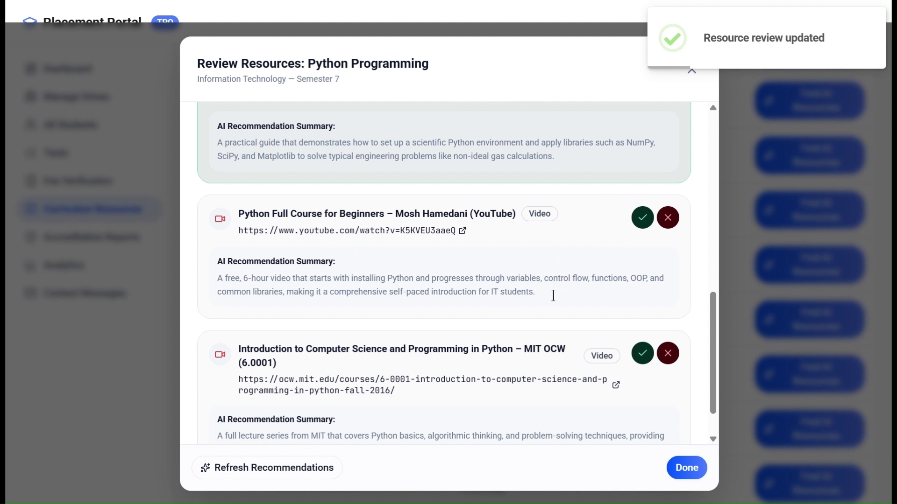
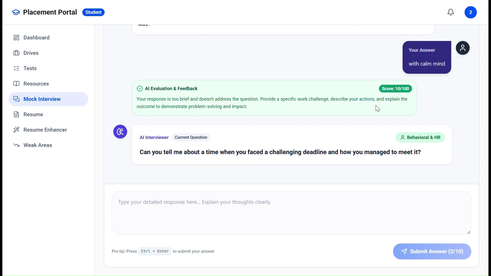
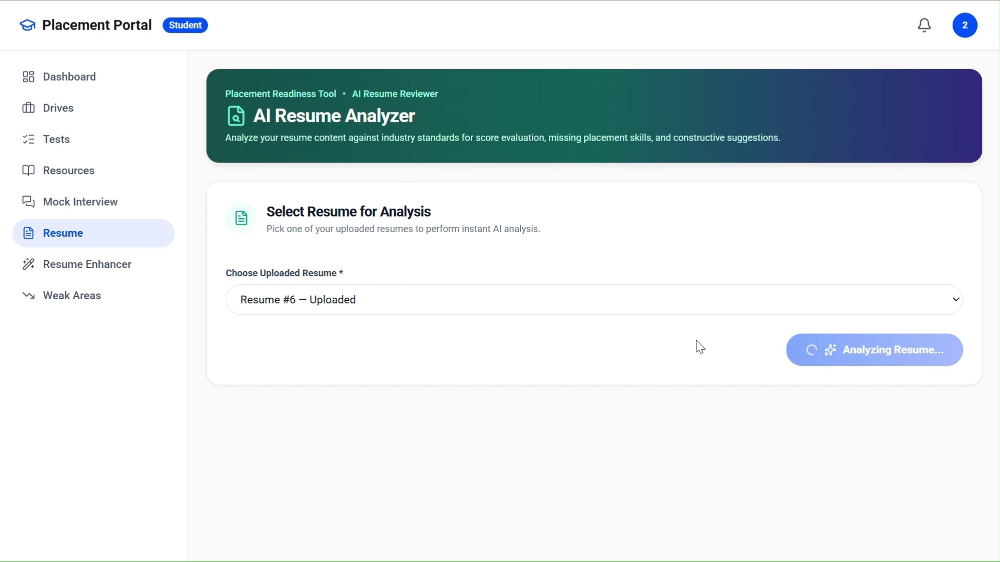
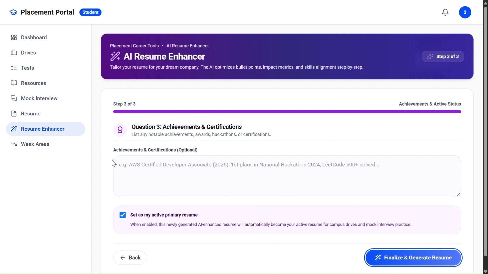

mid-semester project evaluation — 7th semester b.tech information technology
An enterprise multi-tenant recruitment operating system featuring automated institutional onboarding, Groq AI syllabus curation, turn-by-turn mock interviews, and ATS resume engineering.
Executive outline, problem definition, and multi-tenant architectural scope.
A centralized multi-tenant digital ecosystem that automates the entire campus recruitment lifecycle — from college onboarding and verified eligibility gating to curriculum-grounded study curation, proctored instant assessments, and generative AI interview simulations.
Detailed functional breakdown pairing 10 core modules with live video demonstration evidence.










Targeted engineering roadmap for final semester completion and institutional deployment.
| CORE MODULE / SYSTEM COMPONENT | PLANNED SCOPE | MID-SEM STATUS | VERIFICATION EVIDENCE |
|---|---|---|---|
| Institutional Onboarding & Gating | Domain validation, signup OTP | VERIFIED & SHOWN IN VIDEO | Razorpay Modal & Setup Checklist |
| College Admin Governance Hub | Department & syllabus settings | VERIFIED & SHOWN IN VIDEO | 9 Engineering Branches & Billing |
| Custom Feature Proposals | Bi-directional request loop | VERIFIED & SHOWN IN VIDEO | Proposal Modal & SuperAdmin Reply |
| SuperAdmin Command Deck | Multi-tenant university control | VERIFIED & SHOWN IN VIDEO | Colleges Directory & Global Broadcast |
| Placement Drives & Eligibility | Automated criteria screening | VERIFIED & SHOWN IN VIDEO | TCS Drive (₹3.4-10 LPA) Badging |
| Skill Gap Diagnostics | Failure tracking across tests | VERIFIED & SHOWN IN VIDEO | Recurring Weak Areas (Java/DSA) |
| Curriculum Study Resources | Groq AI syllabus parsing | VERIFIED & SHOWN IN VIDEO | 34 Subjects & MIT OCW Links |
| Turn-by-Turn AI Mock Interview | 10-question behavioral/technical | VERIFIED & SHOWN IN VIDEO | Interactive Dialogue & Zero-Sum DSA |
| ATS Resume Benchmark Scoring | ATS heuristic scoring & gaps | VERIFIED & SHOWN IN VIDEO | Score 78.0/100 & 8 Skill Gaps |
| AI Resume Enhancer Wizard | Interactive project quantifier | VERIFIED & SHOWN IN VIDEO | Metric Transformer & Rebuilder |
| Fee-Verified Drive Application Gate | Mandatory receipt check | PENDING FINAL SPRINT | Under active migration in applications.py |
ai-powered smart placement & career preparation portal.
All 10 core modules are running in local staging with 37/37 passing backend tests and verified video demonstration. Open for faculty questions and project feedback.